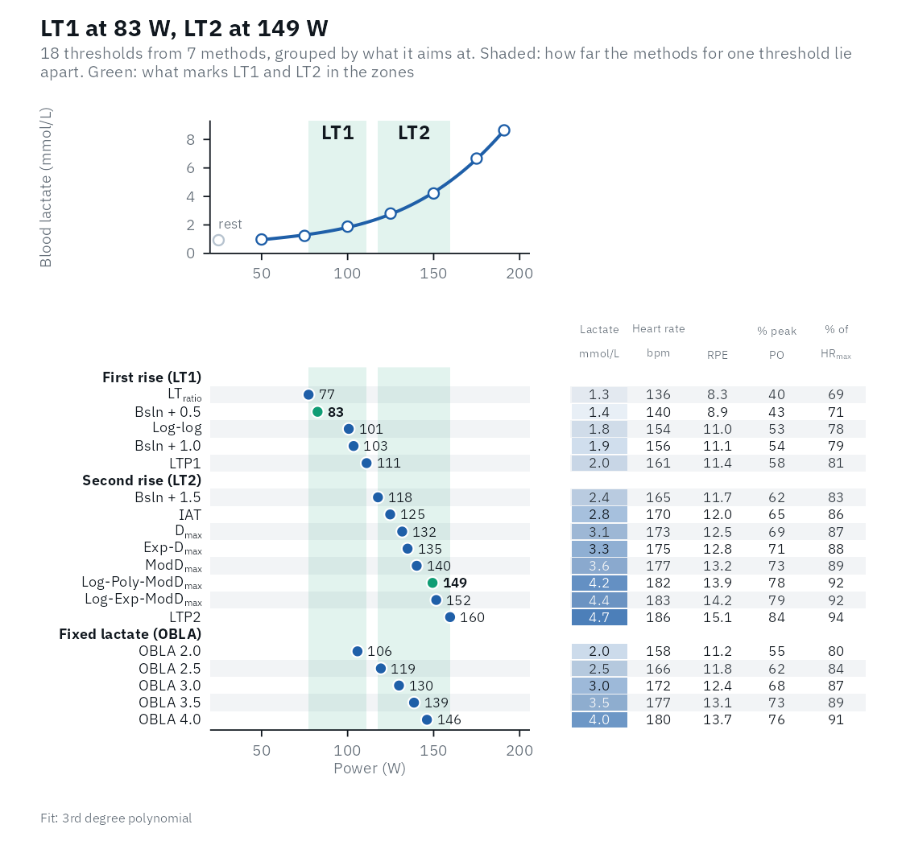
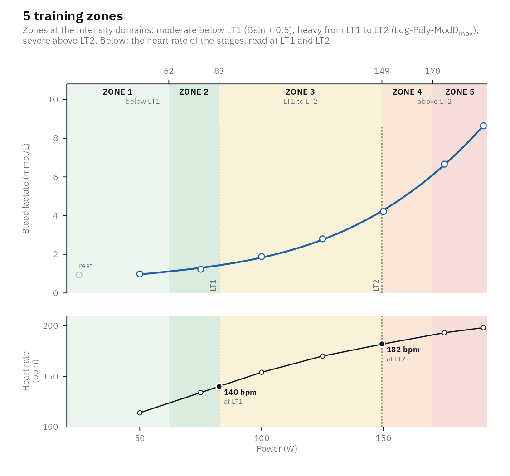
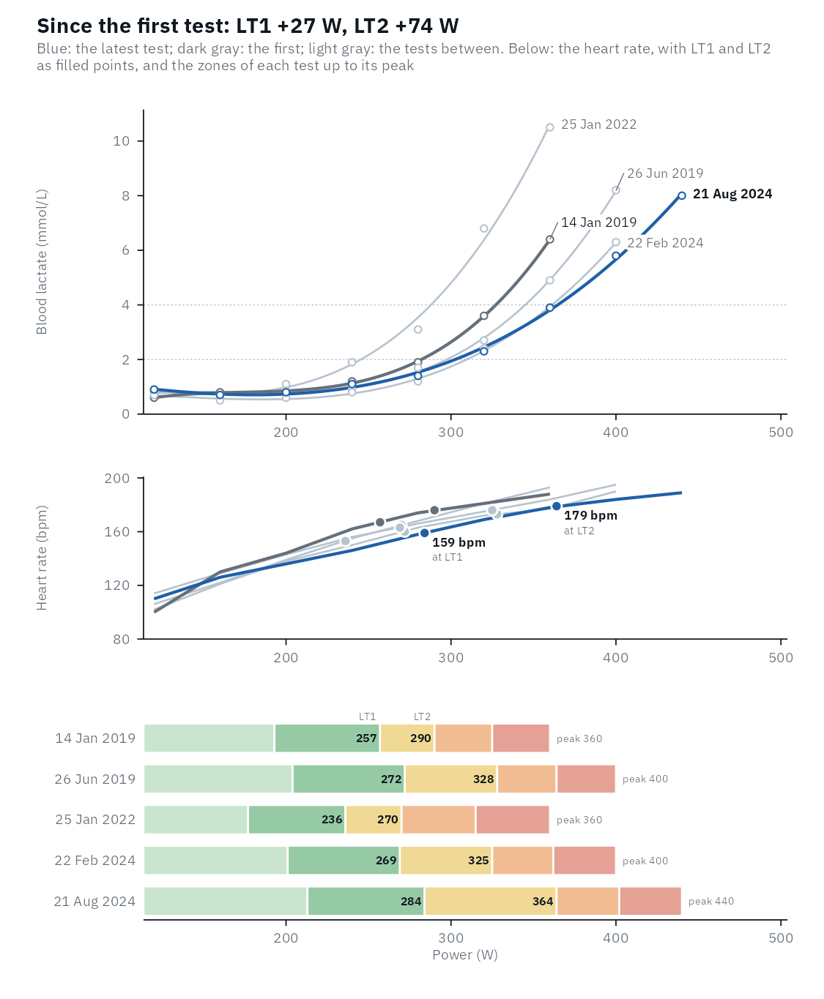
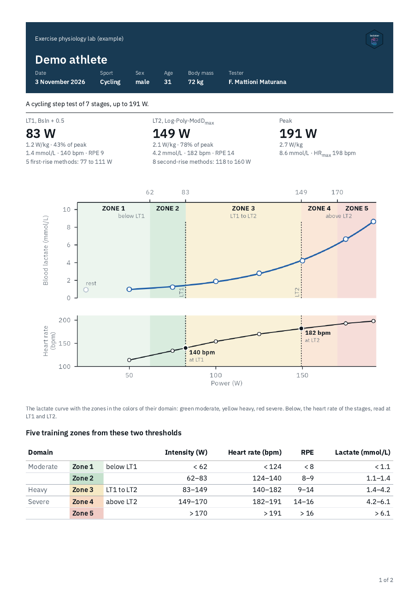
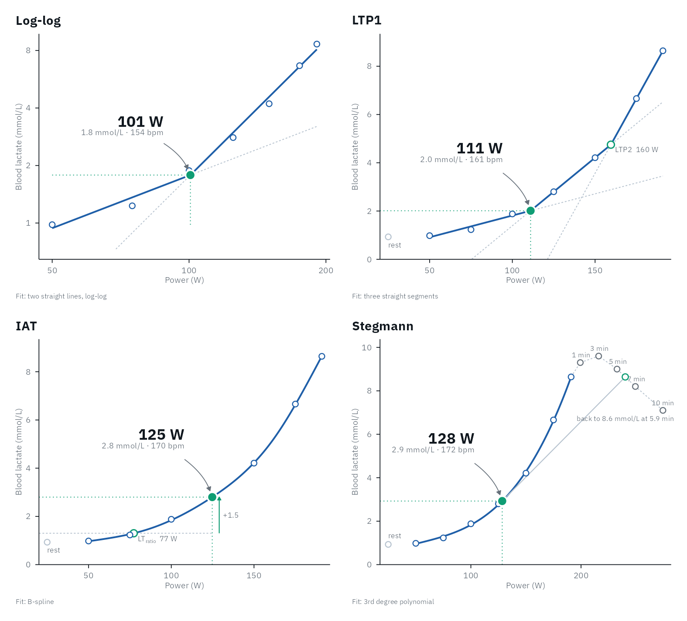
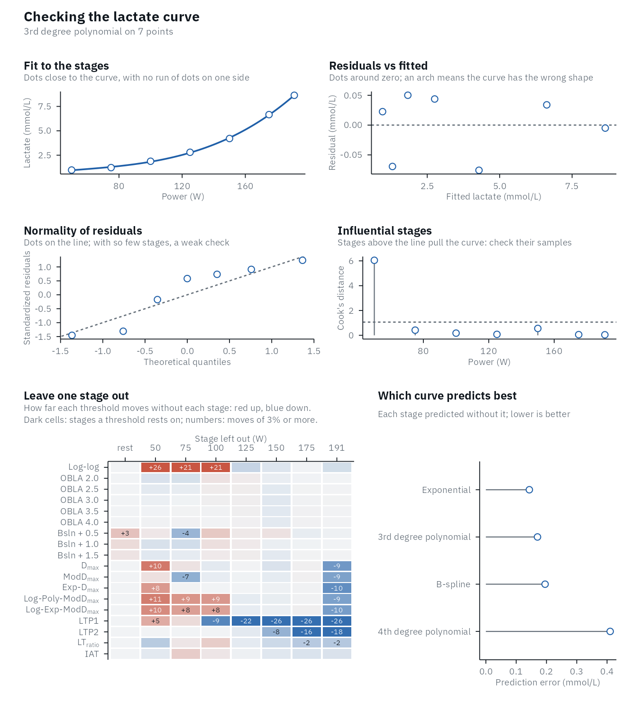

lactater takes the lactate samples of a step incremental test and gives you the thresholds, how sure they are, what to double-check, the training zones they make, how they changed since the last test, and a report for the athlete. It computes the methods sport scientists use, each as its original paper defined it: Log-log, OBLA, Bsln+, the Dmax family, the lactate turn points, LTratio, and the individual anaerobic thresholds of Dickhuth, of Stegmann and, for running, of Keul and of Simon. It is written for teaching too: every function and article says what the evidence behind it is.
What it does
| To | Use | You get |
|---|---|---|
| Estimate the thresholds | lactate_threshold() |
every method at once, with heart rate, RPE and pace at each threshold |
| Know how sure each one is | ci = TRUE |
bootstrap intervals for the noise of the samples |
| Check the data and the fit |
lactate_checks(), lactate_diagnostics(), lactate_fit_quality()
|
what to double-check, residuals, influential stages, how much each threshold rests on one stage |
| Make training zones | lactate_zones() |
three or five zones from LT1 and LT2 (Bsln + 0.5 and Log-Poly-ModDmax unless you choose others), with intensity, pace, heart rate, RPE and lactate |
| Compare two tests |
compare_tests(), curve_shift(), curve_shape()
|
each change against the noise of the method (its noise, the ratio of the change to it, and whether it lies beyond it), and how far and how the curve moved |
| Measure your own noise | lactate_reliability() |
the test-retest typical error of each threshold from your repeated tests, for compare_tests()
|
| Follow a series of tests | lactate_trend() |
the curves and zones of up to five tests, and a trend for longer series |
| Compare athletes | relative_thresholds() |
thresholds per kg and as a percentage of peak intensity and heart rate |
| Compare with the population | reference_percentiles() |
the percentile of power at 3 mmol/L and at baseline + 1 mmol/L among German adults of the same age and sex (cycling, general population) |
| Count training | training_load() |
time in each zone and the polarization index |
| Predict a race |
predict_performance(), calibrate_performance()
|
race time or time-trial power with a 95% range, from published equations or your own |
| Report the test |
test_report(), report_start()
|
a web page and PDF for the athlete or the coach |
| Record a test | the web form, read_recording(), recording_sheet()
|
a form that saves itself and downloads an .xlsx lactater reads; a printable sheet and a CSV template |
| Check the MLSS | lactate_mlss() |
the maximal lactate steady state from constant-load bouts, and how far each threshold lies from it |
| Analyze a sprint test | vlamax() |
the maximal lactate accumulation rate (V̇Lamax) |
| Practice |
lactate_tests, demo_data
|
16 real and simulated tests across sports and fitness levels |
The charts
Every result has a plot, made to explain itself. Click a chart for its help page; the method plots, the diagnostics, the comparisons, the training load and the race prediction have their own.
|
 One test, every method: each threshold on one axis, grouped by what it aims at, with its values. autoplot(results)
|
 Training zones: three or five, colored by intensity domain, with the heart rate at LT1 and LT2. autoplot(lactate_zones(…))
|
|
 Up to five tests: where the curve, the heart rate and the zones moved, by date. autoplot(lactate_trend(…))
|
 A report for the athlete: the whole test on two A4 pages, as a web page and PDF. test_report(results)
|
|
 Each method, as its paper defined it: what it fitted, the stages, and the threshold with its lactate and heart rate. autoplot(results, method = “LTP1”)
|
 Checking the curve: residuals, influential stages, and how far each threshold moves without each stage. autoplot(lactate_diagnostics(results))
|
Installation
install.packages("lactater")
# development version
# install.packages("pak")
pak::pak("fmmattioni/lactater")Get started
One row per stage: intensity, lactate and, if you have them, heart rate and RPE; the resting sample is the row with intensity 0. lactate_threshold() estimates every method at once, autoplot() shows how they agree, and lactate_zones() turns the two you choose into training zones:
results <- lactate_threshold(demo_data, intensity, lactate, heart_rate, plot = FALSE)
results
#> # Lactate thresholds: cycling, 3rd degree polynomial, 7 stages + rest
#> # LT1: 83 W (Bsln + 0.5)
#> # LT2: 149 W (Log-Poly-ModDmax)
#> method_category method fitting intensity lactate heart_rate
#> <fct> <fct> <chr> <dbl> <dbl> <dbl>
#> 1 Log-log Log-log 3rd degree pol… 101 1.8 154
#> 2 OBLA OBLA 2.0 3rd degree pol… 106 2 158
#> 3 OBLA OBLA 2.5 3rd degree pol… 119 2.5 166
#> 4 OBLA OBLA 3.0 3rd degree pol… 130 3 172
#> 5 OBLA OBLA 3.5 3rd degree pol… 139 3.5 177
#> 6 OBLA OBLA 4.0 3rd degree pol… 146 4 180
#> 7 Bsln+ Bsln + 0.5 3rd degree pol… 83 1.4 140
#> 8 Bsln+ Bsln + 1.0 3rd degree pol… 103 1.9 156
#> 9 Bsln+ Bsln + 1.5 3rd degree pol… 118 2.4 165
#> 10 Dmax Dmax 3rd degree pol… 132 3.1 173
#> 11 Dmax ModDmax 3rd degree pol… 140 3.6 177
#> 12 Dmax Exp-Dmax Exponential (d… 135 3.3 175
#> 13 Dmax Log-Poly-ModDmax 3rd degree pol… 149 4.2 182
#> 14 Dmax Log-Exp-ModDmax Exponential (d… 152 4.4 183
#> 15 LTP LTP1 3rd degree pol… 111 2 161
#> 16 LTP LTP2 3rd degree pol… 160 4.7 186
#> 17 LTratio LTratio B-Spline (defa… 77 1.3 136
#> 18 IAT IAT B-Spline (defa… 125 2.8 170
lactate_zones(results, model = 5)
#> # A tibble: 5 × 9
#> zone domain description intensity_from intensity_to lactate_from lactate_to
#> <chr> <chr> <chr> <dbl> <dbl> <dbl> <dbl>
#> 1 Zone 1 modera… below LT1 NA 62 NA 1.1
#> 2 Zone 2 modera… below LT1 62 83 1.1 1.4
#> 3 Zone 3 heavy LT1 to LT2 83 149 1.4 4.2
#> 4 Zone 4 severe above LT2 149 170 4.2 6.1
#> 5 Zone 5 severe above LT2 170 NA 6.1 NA
#> # ℹ 2 more variables: heart_rate_from <dbl>, heart_rate_to <dbl>Add ci = TRUE for bootstrap intervals, lactate_checks() for what to double-check, compare_tests() for a second test and test_report() for a web page and PDF for the athlete (see a cyclist and a runner). The web form records a test and downloads an .xlsx that read_recording() reads, and the cheatsheet puts the whole package on two pages (also as a PDF). Get started walks through all of it.
Learn more
- Get started: the whole workflow, task by task.
- Best practices for a step test: how to run a test, as a checklist with sources.
- The methods and the evidence and Checking the analysis: how each method is computed, what the studies say, and how to check a result.
- Training zones, training load, comparing tests and predicting performance: what to do with the thresholds.
- Beyond the step test and the example data.
lactater 1.0 fixed several calculations of earlier versions; see what changed.